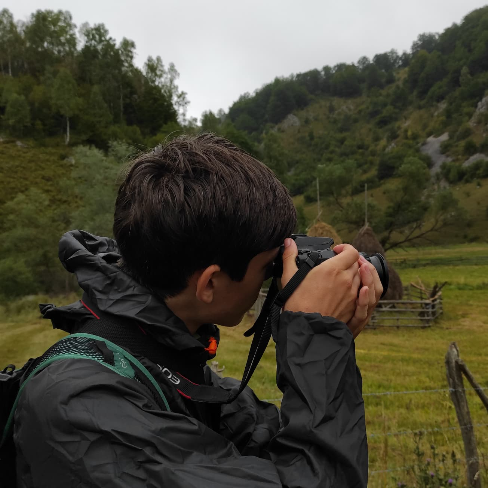
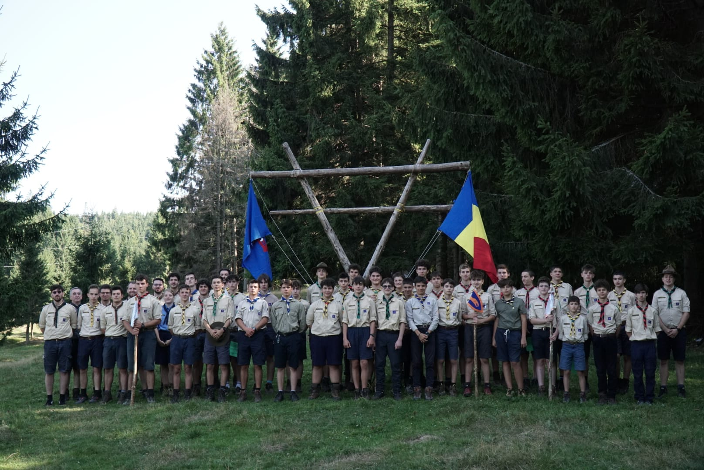
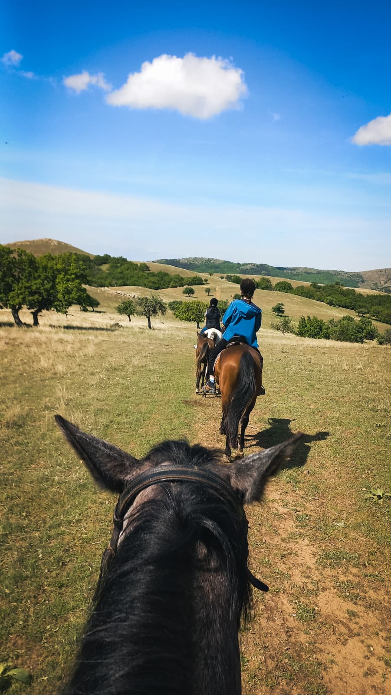
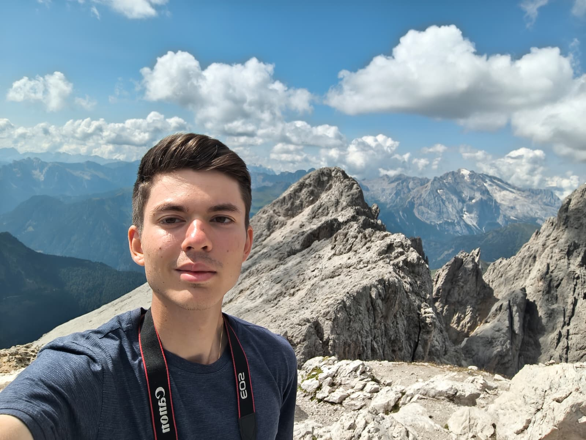

Despre mine
Mă numesc Andăr Francisc-Eduard și sunt student în anul II la Facultatea de Automatică și Calculatoare din cadrul UNSTPB. Sunt pasionat de tehnologie, programare și tot ceea ce ține de lumea digitală.
De asemenea, îmi dedic o mare parte din timpul liber fotografiei. Cel mai mult îmi place să fotografiez peisaje montane, dar și urbane, din locurile în care călătoresc în vacanțe.
Încă din anul 2017, sunt membru activ în cadrul Asociației Cercetașii Munților. Această experiență m-a format ca persoană, dezvoltându-mi abilitațile de lucru în echipă, disciplina și capapacitatea de a lua decizii rapide în situații neprevăzute. Am învățat să prețuiesc natura, însă, mai presus de toate, am învățat să ai ajut pe toți cei aflați în difcultate.




Interesele mele
Îmi place să îmbin creativitatea cu logica și să lucrez la proiecte din domenii precum:
- Programare (C/C++)
- Tehnologii web
- Baze de date
- Fotografie
Sunt mereu dornic să învăț lucruri noi și să-mi dezvolt abilitățile, atât în mediul academic, cât și prin proiecte personale.
Contactați-mă